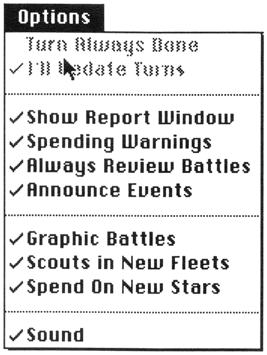

The Options Menu

Below is a summary of all the options available in the Options Menu.
Turn Always Done
In a multiplayer game, if you’ve been completely destroyed, give up, or just don’t have anything to do for a couple turns, selecting “Turn Always Done” will allow the game to go on without your need to register you turn as done.
I’ll Update Turns
In a multiplayer game, if some Macs are faster than others, you probably want the fast Macs to do the turn updates. Have the Macs that don’t want to update the turn deselect this option. If no one has this option checked, the game will never be updated...
Show Report Window
This option forces the Report Window to be displayed at the beginning of every turn, even if you closed it before the end of the last one.
Spending Warnings
Warns you when you end your turn if you’re not spending enough money to support some of your planets.
Always Review Battles
Will cause you to automatically review all battles that happened during the turn update at the beginning of the next turn.
Announce Events
Will inform you with dialogs about the most important events (besides battles) that occurred during turn update, like technology advances, new planets, and things like that.
Graphic Battles
Lets you specify if you want to watch battles take place “graphically” or if you just want see the battle summary. A full text report of the battle will always be put in the Report Window whenever you review a battle.
Scouts in New Fleets
Will put any new ship of a type beginning with the word “Scout” into its own unique fleet. Standard practice is to put new ships in fleets that have ships of the type being built (if such a fleet exists at the star where the ships were built).
Spend on New Stars
Automatically spend enough money on newly colonized stars. Helpful if you’re about to colonize a new star but will be gone for a turn or so and have selected the “Always Done” option. This option doesn’t work as well if you colonize more than one star at a time, since sometimes you just plain won’t have enough money.
Sound
Turn on and off sound effects.